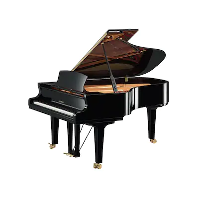
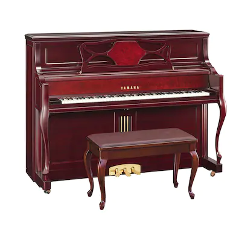
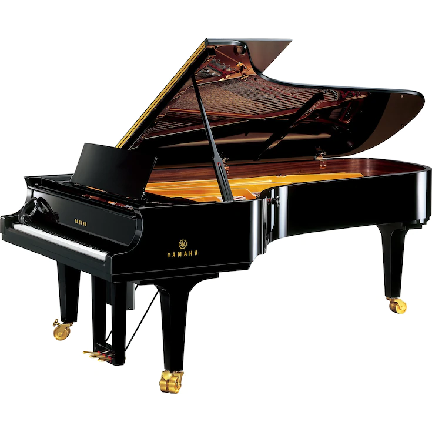
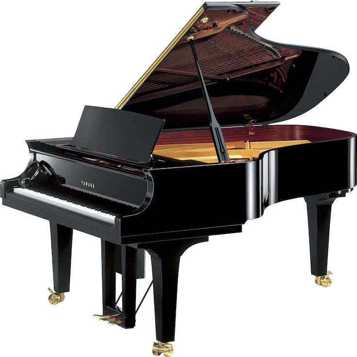
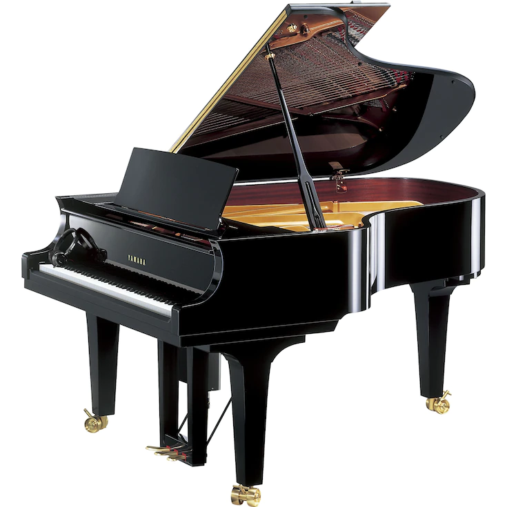
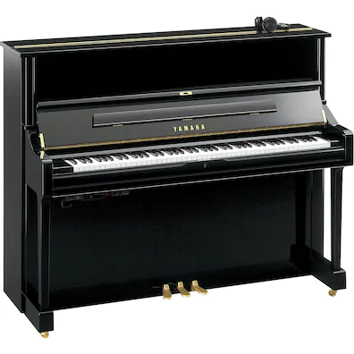

Instrumentos de viento de madera y metal
El primer instrumento de viento de Yamaha, la trompeta YTR-1, se lanzó al mercado en 1966. Desde entonces, Yamaha ha desarrollado una amplia gama de instrumentos de viento de madera y metal utilizando las últimas tecnologías y las habilidades perfeccionadas a lo largo de los años.
Acústico
EL COMPAÑERO PERFECTO PARA TU RECORRIDO MUSICAL.
Los pianos de cola Yamaha trabajan en colaboración contigo para diseñar la melodía que tienes en mente; la música de tu alma. Emanan un sonido que brilla aún más intensamente de lo que imaginabas, un sonido que hace que tu corazón se acelere y tus emociones fluyan. Totalmente unido a tu recorrido, mientras das vida a las infinitas posibilidades que tienes en tu interior.
Handmade Flutes

900/800 Series
Inspirados para comenzar de nuevo, volvimos a hacer borrón
y cuenta nueva aplicando todo el conocimiento, los avances
y las habilidades que hemos obtenido durante las últimas dos
décadas creando algunas de las mejores flautas hechas a mano
disponibles en la actualidad en el diseño de una línea completamente
nueva de flautas hechas a mano.

Serie VS
Las flautas de madera hechas a mano son adecuadas
no solo para música solista y de cámara, sino también
para su uso en la orquesta sinfónica moderna.
Flautas Profecionales

700/600/500 Series
Estas flautas, meticulosamente ajustadas a mano y probadas por
artesanos experimentados, son más que simples versiones económicas
de nuestras flautas profesionales
Flautas intermedias y de estudiante

400/300/200 Series
A lip plate designed to guide beginners toward proper breath
utilization, keys with carefully considered dimensions and
angles for optimum balance and easy playability.
Flautas altas y bajas
YFL-A421(U)(S)
El modelo YFL-A421 de Yamaha es una de las flautas alto más
solicitadas del mundo. Aunque se caracteriza principalmente
por ofrecer una respuesta ágil y la entonación precisa, el
rasgo que destaca por encima de los demás es sin duda el
sonido cálido y hermoso que produce.
YFL-B441(S)
Al igual que la flauta alto YFL-A421, la flauta bajo YFL-B441 está fabricada
con latón dorado y, como la primera, ofrece una respuesta rápida, un hermoso
e intenso tono y una entonación precisa.
TUS SENTIMIENTOS SE FUSIONAN CON LOS TONOS DE TU PIANO.
El sonido de tu piano comienza en el corazón, se vuelve más suave día a día,
a medida que las yemas de los dedos se conectan con las teclas creando melodías que expresan emociones profundas.
Este es el piano con el que te relajas.
Piccolos

YPC-91/92
El modelo YPC-91, fabricado a mano por nuestros mejores artesanos,
se ha diseñado en estrecha colaboración con algunos de los mejores
músicos del mundo. Incorpora una cabeza y un cuerpo de selecta madera
de granadilla cuidadosamente secada.

YPC-81/81R/82
Estos flautines se fabrican a mano por los mejores artesanos
e incorporan cuerpos de madera de granadilla de la mejor calidad.
La cabeza del modelo YPC-82 es de plata de ley y la del modelo YPC-81
es de madera de granadilla.

YPC-62/62M/62R
Un favorito desde hace mucho tiempo de los músicos profesionales, el YPC-62 se puede encontrar en muchas
de las mejores orquestas de todo el mundo. Caracterizado por una excelente entonación y jugabilidad.
YPC-32
Con su facilidad de ejecución,
entonación precisa y sonido flautín característico,
el YPC-32 es muy popular entre los estudiantes y los dobladores.
CS Dos series únicas de clarinetes personalizados (custom): CS y SE
Se descartaron todas las ideas preconcebidas y se dedicó una gran cantidad de tiempo
a la investigación básica que comenzó con una pregunta fundamental: ¿Qué es un clarinete ideal?
Los resultados de ese trabajo esencial se actualizaron en excelente detalle por maestría
artesanal y se refinaron a través de evaluaciones extensas de artistas.
Este exhaustivo proceso dio lugar al nacimiento de los clarinetes exclusivos
de las series CS y SE.
Clarinetes Bb/A

YCL-CSGIII/CSG-AIII
Yamaha volvió a analizar y reevaluar literalmente todas y cada una de las especificaciones del diseño.

YCL-CSVR/CSVR-A
El diseño tradicional con un timbre/tono bien definido
Este modelo tiene un timbre/tono bien definido. El flujo de la respiración es
suave con tono, articulación y un tono de gran prestigio que se acopla fácilmente en conjuntos..

YCL-CX
Este modelo tiene un timbre/tono bien definido. El flujo de la respiración es suave con tono, articulación y un tono de gran prestigio que se acopla fácilmente en conjuntos.
YCL-CX/CX-A
El CX tiene un sonido redondo completo con una claridad inmediata al timbre/tono. Tiene orificios de tono insertados y un anillo de pabellón plateado que contribuyen a la presencia y apertura de su timbre/tono.
SE Custom (personalizado)

YCL-SE Artist Model/SE Artist Model A
La tecnología y artesanías más refinadas de Yamaha se aplicaron para crear un clarinete emblemático que satisface las necesidades de los mejores artistas de todo el mundo: el YCL-SE Artist Model.

YCL-SEVR/SEVR-A
Conservando los tradicionales orificios de tono anchos, ahusados y socavados de la series SE, el clarinete SEVR Custom ofrece un tono rico y todavía más libertad de expresión.
Sib profesionales
YCL-650
El 650 es una excelente alternativa para aquellos que se toman en serio el desempeño de clarinete pero deben cuidar su presupuesto.
Clarinetes de Sib intermedios.

YCL-450/450N
Al diseñar la serie YCL-450, la concebimos para que fuera un instrumento que un instrumentista que recién comienza quiera continuar tocando en el futuro.

YCL-450M
Al diseñar la serie YCL-450, la concebimos para que fuera un instrumento que un instrumentista que recién comienza quiera continuar tocando en el futuro. Estos son todos instrumentos de granadillo diseñados con el conocimiento obtenido durante años de experiencia en la fabricación de instrumentos de nivel profesional.
Clarinetes de Sib estándar
YCL-255/255S
El YCL-255 combina la experiencia de producción de vanguardia con las funciones de alta gama de los clarinetes de Yamaha.
Clarinetes armónicos
YCL-621II
Los clarinetes de bajo profesionales de Yamaha, que están meticulosamente elaborados a mano, te brindan un sonido rico y cálido con proyección potente y una entonación extremadamente precisa.
YCL-622II
Los clarinetes de bajo profesionales de Yamaha, que están meticulosamente elaborados a mano, te brindan un sonido rico y cálido con proyección potente y una entonación extremadamente precisa.
YCL-221II/221IIS
Yamaha ofrece un clarinete bajo de resina ABS con acabado mate con una calidad tonal muy similar a la de un modelo de madera profesional.
Clarinetes altos
YCL-631
Tono relajado, constante y de afinación precisa en todos los registros.
Preferido para tocar en conjuntos por instrumentistas, desde el nivel de estudiante hasta el de profesionales.
YCL-631II
Los clarinetes de Sib de Yamaha se pueden encontrar en muchas de las mejores orquestas del mundo y tienen una entonación precisa y un sonido rico y resonante lleno de color y calidez.
Clarinetes en mi bemol
YCL-881
El YCL-881 se diseñó con algunos de los mejores clarinetistas del mundo y tiene un sonido redondo y profundo que puede mezclarse con otros o proyectar un pasaje solista.
YCL-681II
El YCL-681II presenta un sonido cálido y atractivo que resulta ideal para los músicos que buscan un instrumento profesional de gama superior a un precio asequible.
Se descartaron todas las ideas preconcebidas y se dedicó una gran cantidad de tiempo
a la investigación básica que comenzó con una pregunta fundamental: ¿Qué es un clarinete ideal?
Los resultados de ese trabajo esencial se actualizaron en excelente detalle por maestría
artesanal y se refinaron a través de evaluaciones extensas de artistas.
Este exhaustivo proceso dio lugar al nacimiento de los clarinetes exclusivos
de las series CS y SE.
Alto Saxophones
YAS-875EX
El nuevo saxofón alto Yamaha YAS-875EX Custom EX marca un gran paso adelante en el diseño de saxofón.
YAS-82Z
La evolución del Yamaha Custom Z continúa. Con un sonido potente y la capacidad de tocar pasajes rápidos sin dificultad, el Z está diseñado para cumplir con sus expectativas más altas.
YAS-26
Tenor Saxophones
YTS-875EX
El Custom EX representa una respuesta a la búsqueda de Yamaha del sonido de saxofón ideal y es el resultado de décadas de minuciosa investigación y pruebas con algunos de los mejores saxofonistas del mundo.
EL COMPAÑERO PERFECTO PARA TU RECORRIDO MUSICAL.
Los pianos de cola Yamaha trabajan en colaboración contigo para diseñar la melodía que tienes en mente; la música de tu alma. Emanan un sonido que brilla aún más intensamente de lo que imaginabas, un sonido que hace que tu corazón se acelere y tus emociones fluyan. Totalmente unido a tu recorrido, mientras das vida a las infinitas posibilidades que tienes en tu interior.
Handmade Flutes
900/800 Series
Inspirados para comenzar de nuevo, volvimos a hacer borrón y cuenta nueva aplicando todo el conocimiento, los avances y las habilidades que hemos obtenido durante las últimas dos décadas creando algunas de las mejores flautas hechas a mano disponibles en la actualidad en el diseño de una línea completamente nueva de flautas hechas a mano.
Serie VS
Las flautas de madera hechas a mano son adecuadas no solo para música solista y de cámara, sino también para su uso en la orquesta sinfónica moderna.
Flautas Profecionales
700/600/500 Series
Estas flautas, meticulosamente ajustadas a mano y probadas por artesanos experimentados, son más que simples versiones económicas de nuestras flautas profesionales
Flautas intermedias y de estudiante
400/300/200 Series
A lip plate designed to guide beginners toward proper breath utilization, keys with carefully considered dimensions and angles for optimum balance and easy playability.
Flautas altas y bajas
YFL-A421(U)(S)
El modelo YFL-A421 de Yamaha es una de las flautas alto más solicitadas del mundo. Aunque se caracteriza principalmente por ofrecer una respuesta ágil y la entonación precisa, el rasgo que destaca por encima de los demás es sin duda el sonido cálido y hermoso que produce.
YFL-B441(S)
Al igual que la flauta alto YFL-A421, la flauta bajo YFL-B441 está fabricada con latón dorado y, como la primera, ofrece una respuesta rápida, un hermoso e intenso tono y una entonación precisa.
TUS SENTIMIENTOS SE FUSIONAN CON LOS TONOS DE TU PIANO.
El sonido de tu piano comienza en el corazón, se vuelve más suave día a día, a medida que las yemas de los dedos se conectan con las teclas creando melodías que expresan emociones profundas. Este es el piano con el que te relajas.
Piccolos
YPC-91/92
El modelo YPC-91, fabricado a mano por nuestros mejores artesanos, se ha diseñado en estrecha colaboración con algunos de los mejores músicos del mundo. Incorpora una cabeza y un cuerpo de selecta madera de granadilla cuidadosamente secada.
YPC-81/81R/82
Estos flautines se fabrican a mano por los mejores artesanos e incorporan cuerpos de madera de granadilla de la mejor calidad. La cabeza del modelo YPC-82 es de plata de ley y la del modelo YPC-81 es de madera de granadilla.
YPC-62/62M/62R
Un favorito desde hace mucho tiempo de los músicos profesionales, el YPC-62 se puede encontrar en muchas de las mejores orquestas de todo el mundo. Caracterizado por una excelente entonación y jugabilidad.
YPC-32
Con su facilidad de ejecución, entonación precisa y sonido flautín característico, el YPC-32 es muy popular entre los estudiantes y los dobladores.
CS Dos series únicas de clarinetes personalizados (custom): CS y SE
Se descartaron todas las ideas preconcebidas y se dedicó una gran cantidad de tiempo a la investigación básica que comenzó con una pregunta fundamental: ¿Qué es un clarinete ideal? Los resultados de ese trabajo esencial se actualizaron en excelente detalle por maestría artesanal y se refinaron a través de evaluaciones extensas de artistas. Este exhaustivo proceso dio lugar al nacimiento de los clarinetes exclusivos de las series CS y SE.
Clarinetes Bb/A
YCL-CSGIII/CSG-AIII
Yamaha volvió a analizar y reevaluar literalmente todas y cada una de las especificaciones del diseño.
YCL-CSVR/CSVR-A
El diseño tradicional con un timbre/tono bien definido
Este modelo tiene un timbre/tono bien definido. El flujo de la respiración es suave con tono, articulación y un tono de gran prestigio que se acopla fácilmente en conjuntos..
YCL-CX
Este modelo tiene un timbre/tono bien definido. El flujo de la respiración es suave con tono, articulación y un tono de gran prestigio que se acopla fácilmente en conjuntos.
YCL-CX/CX-A
El CX tiene un sonido redondo completo con una claridad inmediata al timbre/tono. Tiene orificios de tono insertados y un anillo de pabellón plateado que contribuyen a la presencia y apertura de su timbre/tono.
SE Custom (personalizado)
YCL-SE Artist Model/SE Artist Model A
La tecnología y artesanías más refinadas de Yamaha se aplicaron para crear un clarinete emblemático que satisface las necesidades de los mejores artistas de todo el mundo: el YCL-SE Artist Model.
YCL-SEVR/SEVR-A
Conservando los tradicionales orificios de tono anchos, ahusados y socavados de la series SE, el clarinete SEVR Custom ofrece un tono rico y todavía más libertad de expresión.
Sib profesionales
YCL-650
El 650 es una excelente alternativa para aquellos que se toman en serio el desempeño de clarinete pero deben cuidar su presupuesto.
Clarinetes de Sib intermedios.
YCL-450/450N
Al diseñar la serie YCL-450, la concebimos para que fuera un instrumento que un instrumentista que recién comienza quiera continuar tocando en el futuro.
YCL-450M
Al diseñar la serie YCL-450, la concebimos para que fuera un instrumento que un instrumentista que recién comienza quiera continuar tocando en el futuro. Estos son todos instrumentos de granadillo diseñados con el conocimiento obtenido durante años de experiencia en la fabricación de instrumentos de nivel profesional.
Clarinetes de Sib estándar
YCL-255/255S
El YCL-255 combina la experiencia de producción de vanguardia con las funciones de alta gama de los clarinetes de Yamaha.
Clarinetes armónicos
YCL-621II
Los clarinetes de bajo profesionales de Yamaha, que están meticulosamente elaborados a mano, te brindan un sonido rico y cálido con proyección potente y una entonación extremadamente precisa.
YCL-622II
Los clarinetes de bajo profesionales de Yamaha, que están meticulosamente elaborados a mano, te brindan un sonido rico y cálido con proyección potente y una entonación extremadamente precisa.
YCL-221II/221IIS
Yamaha ofrece un clarinete bajo de resina ABS con acabado mate con una calidad tonal muy similar a la de un modelo de madera profesional.
Clarinetes altos
YCL-631
Tono relajado, constante y de afinación precisa en todos los registros. Preferido para tocar en conjuntos por instrumentistas, desde el nivel de estudiante hasta el de profesionales.
YCL-631II
Los clarinetes de Sib de Yamaha se pueden encontrar en muchas de las mejores orquestas del mundo y tienen una entonación precisa y un sonido rico y resonante lleno de color y calidez.
Clarinetes en mi bemol
YCL-881
El YCL-881 se diseñó con algunos de los mejores clarinetistas del mundo y tiene un sonido redondo y profundo que puede mezclarse con otros o proyectar un pasaje solista.
YCL-681II
El YCL-681II presenta un sonido cálido y atractivo que resulta ideal para los músicos que buscan un instrumento profesional de gama superior a un precio asequible.
Se descartaron todas las ideas preconcebidas y se dedicó una gran cantidad de tiempo a la investigación básica que comenzó con una pregunta fundamental: ¿Qué es un clarinete ideal? Los resultados de ese trabajo esencial se actualizaron en excelente detalle por maestría artesanal y se refinaron a través de evaluaciones extensas de artistas. Este exhaustivo proceso dio lugar al nacimiento de los clarinetes exclusivos de las series CS y SE.
Alto Saxophones
YAS-875EX
El nuevo saxofón alto Yamaha YAS-875EX Custom EX marca un gran paso adelante en el diseño de saxofón.
YAS-82Z
La evolución del Yamaha Custom Z continúa. Con un sonido potente y la capacidad de tocar pasajes rápidos sin dificultad, el Z está diseñado para cumplir con sus expectativas más altas.
YAS-26
Tenor Saxophones
YTS-875EX
El Custom EX representa una respuesta a la búsqueda de Yamaha del sonido de saxofón ideal y es el resultado de décadas de minuciosa investigación y pruebas con algunos de los mejores saxofonistas del mundo.